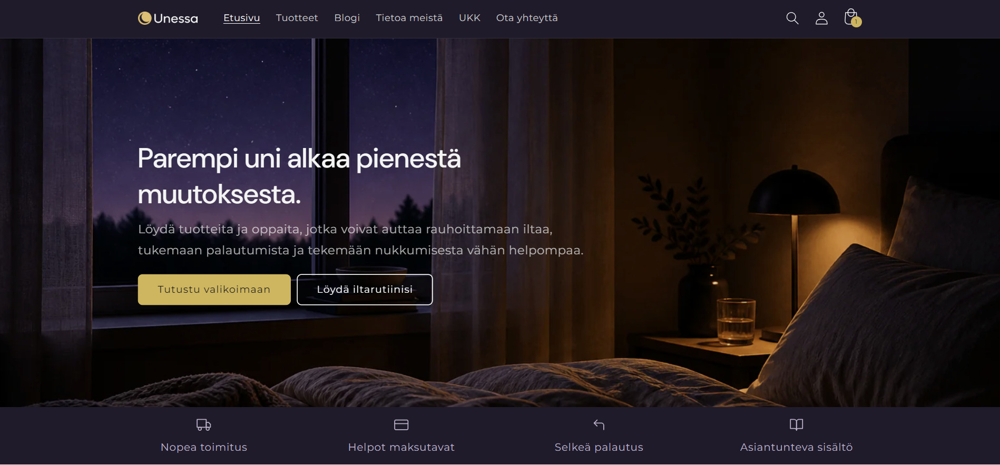
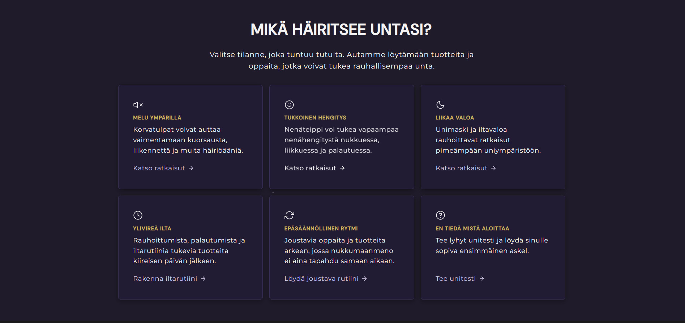
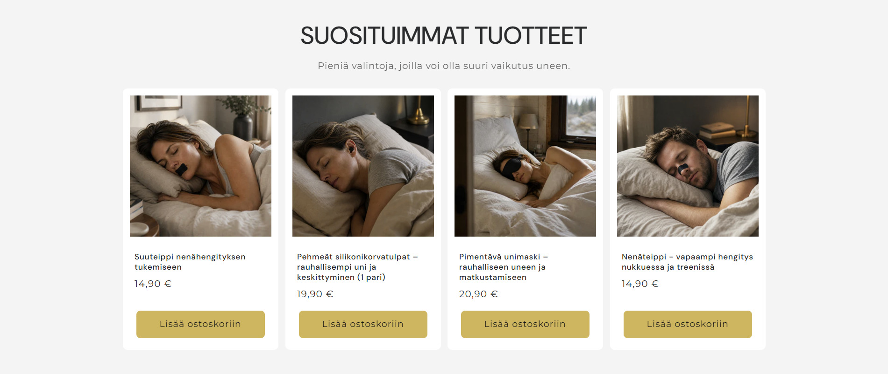
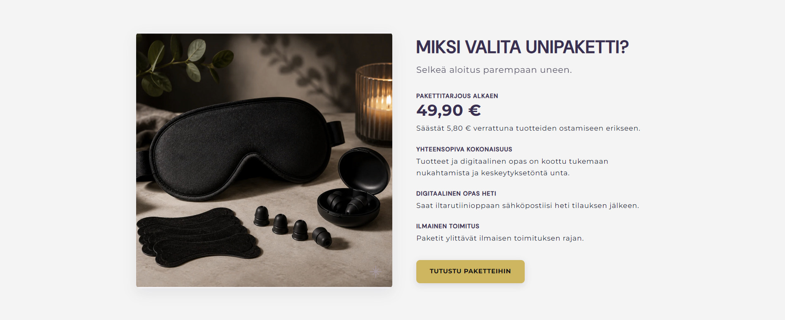
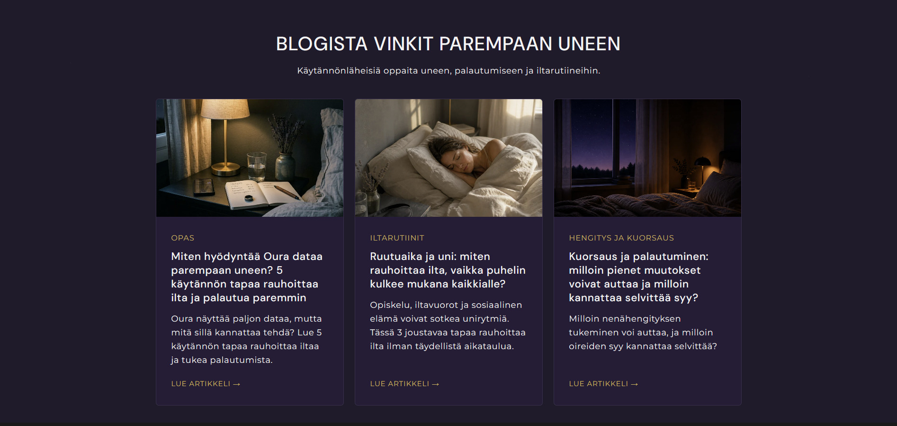

Unessa
Hyvinvointilähtöisen verkkokauppakonseptin suunnittelu ja Shopify-prototypointi. Kurssiprojektissa rakensimme hyvän unen ympärille verkkokaupan, jossa yhdistyvät markkina-analyysi, kohderyhmämäärittely, kuratoitu tuotevalikoima, sisältöstrategia ja kaupallinen verkkokauppalogiikka.
Ongelma
Hyvän unen tuotteita etsivä kuluttaja kohtaa hajanaisen markkinan: apteekit painottuvat lääkkeellisempiin ratkaisuihin ja erikoiskaupat usein kuorsauksen tai uniapnean ympärille.
Tavoite
Suunnitella verkkokauppa, joka asemoituu hyvinvoinnin, unirutiinien ja palautumisen tueksi ilman lääketieteellisiä ylilupauksia tai aggressiivista myyntiä.
Ratkaisu
Shopify-prototyyppi, kuratoitu noin 20 tuotteen valikoima, päätuotteet, tuotepaketti, blogisisältö, maksutapa- ja logistiikkasuunnitelma sekä alustava myyntibudjetti.
Portfolioarvo
Case osoittaa kykyä yhdistää käyttäjätarve, kilpailijapositio, sisältöstrategia ja verkkokaupan kaupallinen logiikka konkreettiseksi prototyypiksi.
Sisällysluettelo
Yleiskatsaus
Unessa oli hyvän unen tuotteisiin keskittyvä verkkokauppakonsepti 21–50-vuotiaille kuluttajille, jotka haluavat parantaa unen laatua, palautumista ja arjen jaksamista. Projektissa suunnittelimme verkkokaupan, joka ei asemoidu sairauden hoitoon, vaan parempaa uniympäristöä ja rauhallisempaa iltarutiinia tukevaksi hyvinvointikaupaksi.
Projektin ydinkysymys oli: miten hyvän unen ympärille voidaan rakentaa verkkokauppa, joka tuntuu luotettavalta ja hyödylliseltä ilman lääketieteellisiä ylilupauksia tai painostavaa kampanjamyyntiä?

Kolme vahvinta näyttöä
1. Markkina- ja kilpailija-analyysistä johdettu tuotevalikoima
Tuotevalikoimaa ei rakennettu pelkän intuition varaan. Hyödynsimme hakusana-analyysiä, kilpailijavertailua ja kilpailijoiden suosituimpien tuotteiden arviointia, jotta valikoima vastaisi sekä asiakkaiden hakukäyttäytymiseen että markkinassa näkyviin puutteisiin.
2. Liiketoimintalogiikka vietiin osaksi verkkokaupan rakennetta
Koska yksittäiset tuotteet olivat suhteellisen edullisia, suunnittelimme tuotepaketin, ilmaisen toimituksen rajan ja lisämyynnin logiikan tukemaan keskiostoksen kasvattamista. Tämä teki konseptista uskottavamman verkkokauppana, ei vain visuaalisena prototyyppinä.
3. Shopify-prototyyppi yhdisti brändin, sisällön ja ostokokemuksen
Lopputuloksena syntyi Shopifyllä rakennettu verkkokauppaprototyyppi, jossa olivat mukana sivurakenne, päätuotteet, kategorisointi, blogisisältö, maksutapojen suunnittelu, logistiikkamalli ja brändin tone of voice.
Konteksti ja ongelma
Unessa-projektin lähtökohtana oli havainto siitä, että uni on noussut osaksi hyvinvoinnin optimointia samalla tavalla kuin liikunta ja ravinto. Kuluttajat etsivät ratkaisuja esimerkiksi stressiin, ruutuaikaan, valoon, meluun ja palautumisen haasteisiin.
Markkinassa olevat vaihtoehdot näyttäytyivät kuitenkin usein joko apteekkien lääke- ja ravintolisäkeskeisinä ratkaisuina tai kuorsauksen ja uniapnean ympärille rakentuvina erikoiskauppoina. Tämä loi mahdollisuuden verkkokauppakonseptille, joka yhdistäisi fyysiset tuotteet, digitaaliset sisällöt, unirutiinia tukevat paketit ja luottamusta rakentavan sisältömarkkinoinnin.
Problem statement: Hyvinvoinnistaan kiinnostunut kuluttaja tarvitsee tavan löytää parempaa unta tukevia tuotteita ja sisältöä yhdestä selkeästä paikasta, koska olemassa olevat vaihtoehdot ovat usein joko hajanaisia, apteekkikeskeisiä tai sairauslähtöisiä.

Oma roolini
Tein projektin parityönä Veera Heikkisen kanssa. Konsepti, analyysi, valikoima ja lopullinen raportointi syntyivät yhteisen työskentelyn kautta, joten case ei esitä lopputulosta yksin tehtynä työnä.
Vastasin erityisesti
- verkkokaupan konseptin ja liiketoimintalogiikan jäsentämisestä yhdessä tiimin kanssa
- kilpailija- ja markkina-analyysin hyödyntämisestä tuotevalikoiman suunnittelussa
- verkkokaupan rakenteen, sivujen ja ostokokemuksen määrittelystä
- Shopify-prototyypin rakentamisesta ja viimeistelystä projektin tavoitteiden mukaisesti
- SEO/GEO-ajattelun viemisestä päätuotteiden kuvauksiin ja blogisisältöön
- sen arvioimisesta, miten tuotepaketit, toimitusraja ja sisältö tukevat verkkokaupan kaupallista toimivuutta
Tutkimus ja tärkeimmät löydökset
Käytimme hakusana-analyysiä, kilpailijavertailua, kilpailijoiden suosituimpien tuotteiden arviointia, Meta Ad Libraryn tarkastelua, asiakassegmentointia ja Figma-ideointia. Menetelmien tarkoitus ei ollut vain dokumentoida markkinaa, vaan tehdä päätöksiä valikoimasta, positioinnista ja verkkokaupan rakenteesta.
1. Asiakkaiden tarve liittyy konkreettisiin unihaasteisiin
Hakusanoissa ja kilpailijoiden tuotenostoissa korostuivat esimerkiksi unimaskit, korvatulpat, nenäteipit, melatoniini ja magnesium. Tämä ohjasi päätöstä rakentaa valikoima konkreettisten käyttötilanteiden ympärille: valosuojaus, ympäristö, hengitys, ravintolisät, iltarutiinit ja paketit.
2. Kilpailijoiden valikoimat jättivät tilaa kuratoidulle hyvinvointikonseptille
Chillamo painottui vahvasti kuorsauksen, hengityksen ja uniapnean ympärille. Apteekit puolestaan olivat vahvoja ravintolisissä ja lääkemäisemmissä ratkaisuissa, mutta niiden tarjoama ei muodostanut lifestyle-henkistä, esteettistä tai kokonaisvaltaista unirutiinikokemusta.
3. Edulliset tuotteet vaativat keskiostoksen kasvattamista
Päätuotteet olivat yksittäin melko edullisia, joten pelkkä yksittäistuotteiden myynti olisi tehnyt kannattavuudesta haastavaa. Tämän vuoksi suunnittelimme tuotepaketin, ilmaisen toimituksen rajan ja lisämyynnin logiikan osaksi kaupan rakennetta.
4. Luottamus piti rakentaa sisällöllä, ei painostavalla myynnillä
Uni on sensitiivinen hyvinvoinnin aihe, ja osa tuotteista sivuaa terveyttä. Siksi brändin tone of voice rajattiin rauhalliseksi, asiantuntevaksi ja vastuulliseksi. Sisältömarkkinoinnin tehtävä oli auttaa asiakasta ymmärtämään omaa tilannettaan ilman liiallisia lupauksia.

Ratkaisuvaihtoehdot ja priorisointi
Ennen lopullista suuntaa vertailimme kolmea mahdollista positiointia. Lopulliseksi suunnaksi valittiin hyvinvointilähtöinen verkkokauppa, koska se tarjosi parhaan kompromissin erottautumisen, käyttäjän arjen tarpeiden, tuotevalikoiman laajennettavuuden ja Shopify-toteutuksen realistisuuden välillä.
Vaihtoehto A
Apteekkityylinen ongelmanratkaisukauppa
Luotettava ja tuttu ostokonteksti.
Vaikea erottautua apteekeista ja liian lääkemäinen vaikutelma.
Ei valittu
Vaihtoehto B
Kuorsaus- ja hengitystuotteisiin erikoistuva kauppa
Selkeä niche ja konkreettinen ongelma.
Liian lähellä Chillamon positiota ja sairauskeskeistä markkinaa.
Ei valittu
Vaihtoehto C
Hyvinvointi- ja unirutiinikauppa
Erottuu lifestyle-, sisältö- ja pakettiajattelulla.
Vaatii vahvaa luottamusta, koska brändi on uusi.
Valittu ratkaisu
Lopullinen ratkaisu
Lopullinen ratkaisu oli Shopifyllä rakennettu Unessa-verkkokauppaprototyyppi. Kauppa tarjoaa tuotteita ja sisältöä unen laadun, palautumisen ja hyvinvoinnin tueksi. Sen arvolupaus on tarjota parempaan uneen liittyvät ratkaisut yhdessä selkeässä, luotettavassa ja esteettisessä verkkokaupassa.
Verkkokaupan pääsivut olivat etusivu, tuotteet, blogi, tietoa meistä, UKK ja ota yhteyttä. Tuotevalikoima jäsennettiin asiakkaan tarpeiden mukaan kategorioihin, kuten hengitys, valosuojaus, ravintolisät, ympäristö, iltarutiinit ja paketit.
Etusivu ohjaa tarpeesta ratkaisuun
Tuotesivut yhdistävät hyödyn, käytön ja hakunäkyvyyden
Tuotepaketti tukee asiakasarvoa ja keskiostosta

Blogisisältö rakentaa luottamusta

Keskeiset design- ja liiketoimintapäätökset
Hyvinvointilähtöinen positiointi
- Vaihtoehdot
- Apteekkityylinen, sairauskeskeinen tai hyvinvointilähtöinen
- Lopullinen päätös
- Hyvinvointilähtöinen unirutiinikauppa
- Perustelu
- Erottui kilpailijoista ja sopi paremmin arjen palautumisen sekä lifestyle-tuotteiden ympärille.
Kuratoitu valikoima
- Vaihtoehdot
- Laaja katalogi tai rajattu valikoima
- Lopullinen päätös
- Noin 20 tuotteen valikoima
- Perustelu
- Rajattu valikoima vähentää valintakuormaa ja tekee konseptista selkeämmän.
Tuotepaketti keskiöön
- Vaihtoehdot
- Yksittäistuotteet etusijalla tai tuotepaketit mukana
- Lopullinen päätös
- Päätuotteet ja tuotepaketti nostettiin keskiöön
- Perustelu
- Tuotepaketti kasvattaa keskiostosta ja tarjoaa asiakkaalle selkeämmän kokonaisratkaisun.
Rauhallinen tone of voice
- Vaihtoehdot
- Aggressiivinen kampanjointi tai asiantunteva sisältö
- Lopullinen päätös
- Rauhallinen, luottamusta rakentava ja vastuullinen viestintä
- Perustelu
- Uni liittyy hyvinvointiin ja osin terveyteen, joten liialliset lupaukset olisivat heikentäneet uskottavuutta.
Validointi, vaikutus ja rajoitteet
Projektin lopputuloksena syntyi Shopifyllä toteutettu verkkokauppaprototyyppi, jota tukivat markkina-analyysi, kohderyhmät, kilpailijavertailu, päätuotevalikoima, alustava myyntibudjetti, sisältöstrategia sekä maksutapa- ja logistiikkasuunnitelma.
Huomio: Projektissa ei ollut käytettävissä julkaisun jälkeistä analytiikkaa, todellista asiakasdataa tai pitkäaikaista myyntiseurantaa. Vaikutusta ei siksi voi esittää mitattuna liiketoimintatuloksena.
Odotettu vaikutus
Ratkaisun odotettu vaikutus käyttäjälle oli tehdä parempaa unta tukevien tuotteiden löytäminen helpommaksi, ymmärrettävämmäksi ja vähemmän lääketieteellisen tuntuiseksi. Liiketoiminnan näkökulmasta odotettu vaikutus oli rakentaa verkkokaupalle erottautuva positio sekä keskiostosta tukeva rakenne.
Rajoitteet ja sokeat pisteet
- Kohderyhmän kiinnostus: hyvinvointilähtöinen positio pitäisi validoida landing page -testillä ja mainosvariaatioilla.
- Tuotepaketin houkuttelevuus: asiakkaat eivät välttämättä halua ostaa useaa tuotetta heti ensimmäisellä käynnillä.
- SEO/GEO-sisällön toimivuus: hakunäkyvyys vaatii aikaa, auktoriteettia ja laadukasta sisältöjatkumoa.
- Tuotteiden laatu ja toimitusketju: prototyyppi ei vielä todista toimittajien laatua tai asiakaskokemusta.
Seuraava järkevä testi
Pienin järkevä seuraava testi olisi ohjata pientä maksettua liikennettä kahdelle tai kolmelle päätuotesivulle ja tuotepakettiin. Testissä mittaisin klikkausprosenttia, ostoskoriin lisäyksiä, tuotepaketin kiinnostavuutta, uutiskirjeeseen liittymistä ja sitä, mitkä viestikulmat tuottavat eniten laadukasta liikennettä.
Reflektio ja krediitit
Mikä onnistui?
Projektissa vahvinta oli se, että verkkokauppaa ei rakennettu pelkkänä visuaalisena Shopify-harjoituksena. Konsepti yhdisti markkinasignaalit, kilpailijaposition, tuotevalikoiman, sisältöstrategian ja kaupallisen rakenteen. Erityisesti tuotepaketin ja toimitusrajan suunnittelu teki ratkaisusta liiketoiminnallisesti uskottavamman.
Mikä jäi epävarmaksi?
Suurin epävarmuus liittyi validointiin. Ilman todellista asiakasliikennettä ei voida tietää, kiinnostaisiko kohderyhmää juuri Unessan positiointi, tuotteiden hinnoittelu tai tuotepaketin rakenne. Myös tuotevalikoiman laatu, toimittajat ja toimitusketju vaatisivat erillisen testauksen ennen oikeaa lanseerausta.
Mitä opin?
- Verkkokaupan suunnittelussa valikoima, hinnoittelu, toimitusraja ja sisältö ovat yhtä keskeisiä kuin käyttöliittymän visuaalinen rakenne.
- Kilpailija-analyysi on hyödyllisin silloin, kun se johtaa konkreettisiin päätöksiin: mitä valitaan, mitä rajataan pois ja mihin positioon kauppa asetetaan.
- Hyvinvointiin liittyvässä verkkokaupassa luottamus on osa tuotetta. Tone of voice, turvallisuusviestintä ja realistiset lupaukset vaikuttavat suoraan konseptin uskottavuuteen.
- Shopify-prototyyppi toimii tehokkaana tapana testata liiketoimintaideaa visuaalisesti ja rakenteellisesti ennen raskaampaa teknistä toteutusta.
Mitä tekisin toisin?
Jos aloittaisin projektin uudelleen, tekisin varhaisessa vaiheessa kevyen asiakaskyselyn tai landing page -testin, jolla validoisin kohderyhmän kiinnostusta eri positiointeihin: apteekkityylinen ongelmanratkaisu, sleep optimization -lifestyle ja konkreettinen unirutiinipaketti.
Krediitit
Tämä projekti syntyi yhteistyössä Veera Heikkisen kanssa osana Haaga-Helian Verkkokauppa liiketoimintamallina -kurssia.
- Jan Nässi: konseptointi, markkina- ja kilpailija-analyysi, verkkokaupan rakenteen suunnittelu, Shopify-prototypointi, sisältö- ja liiketoimintalogiikan kehittäminen yhdessä tiimin kanssa
- Veera Heikkinen: konseptointi, analyysi, kohderyhmien ja verkkokaupan sisällön kehittäminen yhdessä tiimin kanssa
Artefaktit ja linkit
Huomio: Shopify-linkki voi lakata toimimasta, jos kaupan maksullinen jakso päättyy. Tallenna ennen sitä kuvakaappaukset ja mahdollinen staattinen demo portfolioon.